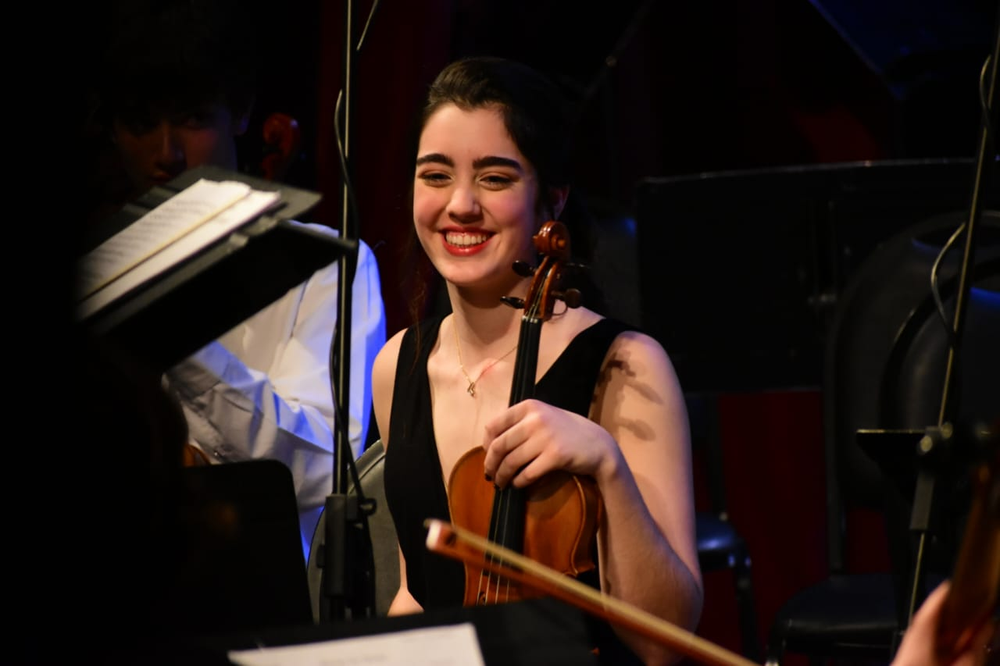

Delfina Cecilia Fernández Denuncio
(Violín 1 y 2)

A los 9 años comienza a estudiar Violin en el Conservatorio de Música de Bahía Blanca con la profesora Gabriela Iglesias.
Con apenas 12 años debutó como solista en el acto de egresada de su hermana mayor, tocando el Himno Nacional Argentino.
Integró el Ensamble Inicial, pasó al ensamble de FOBA (intermedio) donde también tocó solista interpretando el concierto para 2 violines en La menor de Vivaldi. Toca desde el 2022 con la Orquesta del Conservatorio de Música.
Actualmente integra el Ensamble Superior de cuerdas del Conservatorio.
El año que viene comenzará con la Tecnicatura Superior de Violín.